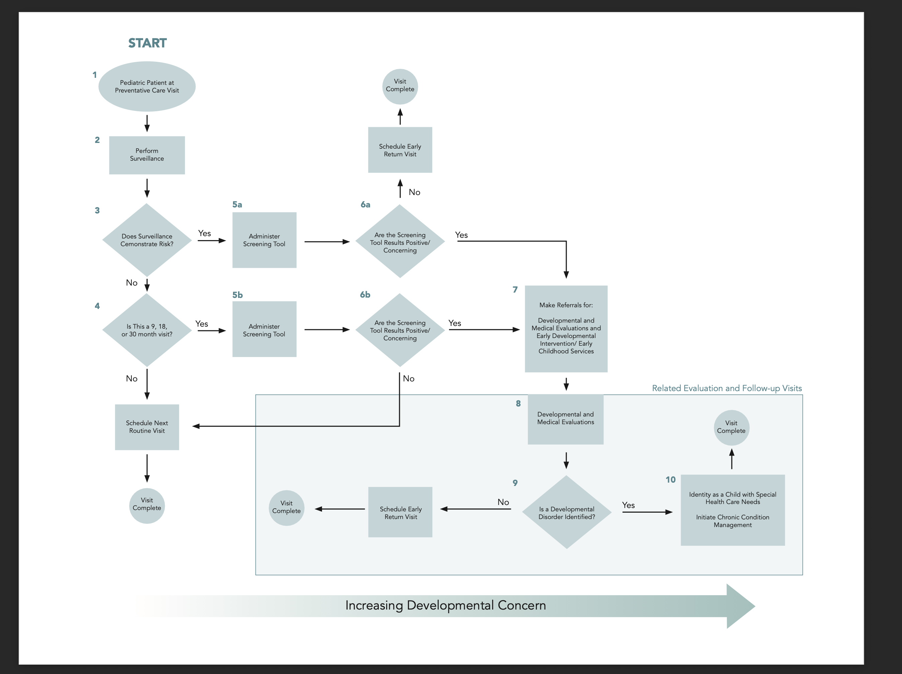
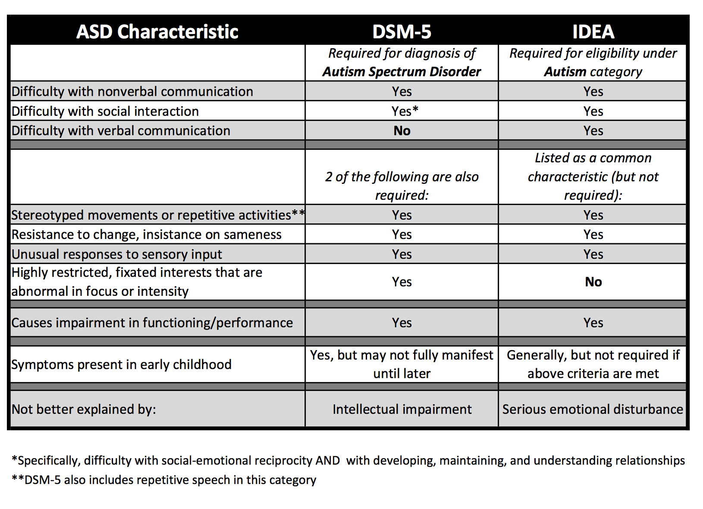

Autism Assessment Process
What an evidence-based assessment looks like
It can be daunting to start a neurodiversity journey with a friend or loved one. Here's what to look for during an evidence-based autism assessment. Each term below is a signal that a provider is up-to-date with best practices — and a question you can ask to test your team.
Drawn from Goldstein, S., & Ozonoff, S. (2018). Assessment of Autism Spectrum Disorder (2nd ed.). Guilford Press.
- Multidisciplinary Team
- Use professionals from various disciplines — psychologists, pediatricians, speech therapists, and educators — for a holistic assessment. If someone is missing, request that they be present.
- Parent/Caregiver Input
- Gather detailed information from parents or caregivers about the child's developmental history, behaviors, and concerns. If you haven't been specifically consulted, key data has been left out.
- Records Review
- Obtain and review all previous and current medical records to gather the child's history, including prior diagnoses, treatments, or interventions. Leaving out medical information can undermine an educational plan.
- Language Assessment
- A speech-language pathologist or autism specialist should evaluate receptive and expressive language using standardized measures, which help track progress over time.
- Screening for Co-occurring Conditions
- Screen for common co-occurring conditions such as ADHD, anxiety disorders, or intellectual disabilities. These are complementary to an ASD diagnosis, not alternatives, and inform a tailored education plan.
- Ecological Assessment
- Because autistic behaviors differ across contexts, assess the learner across the settings in which they live and learn.
- Cultural Considerations
- Take into account cultural and linguistic factors that may influence behavior and communication style — especially for minority communities or multilingual children.
- Trauma-Informed Approach
- Consider the potential impact of trauma or adverse experiences on behavior and development; the likelihood of trauma exposure rises with age.
- Observation
- The team may need to get their hands dirty and observe the child in various settings — home, school, clinic — to assess behavior, social interactions, and communication skills. This is a core way of gathering data.
- Structured Interviews
- Professionals will frequently use standardized interview protocols with parents, teachers, and caregivers to gather information about the child's development and behavior. This is not a simple conversation. It is a scientific process to gather qualitative data.
You are the best advocate. Test your diagnostic team by asking directly: “Will you conduct structured interviews?” or “Can you tell me about your screening process for co-occurring conditions?”
The AAP flow chart
The American Academy of Pediatrics (AAP) published a flow chart describing best practices when conducting an autism assessment. The AAP Council on Children with Disabilities (COCWD) has over 700 members of the medical profession assisting as advisors — you can read more about the COCWD here.

Medical vs. educational diagnosis

There are two types of diagnosis available. The first is a medical diagnosis consistent with the DSM-5, given by a licensed healthcare provider. The second is an administrative or educational diagnosis consistent with the Individuals with Disabilities Education Act. Diagnosis under IDEA by the school's educational professionals is necessary for receiving an IEP.
A medical diagnosis of autism spectrum disorder does not automatically qualify an individual for services under IDEA.
See also: Key Constructs in Assessment for the statistical vocabulary these reports use.